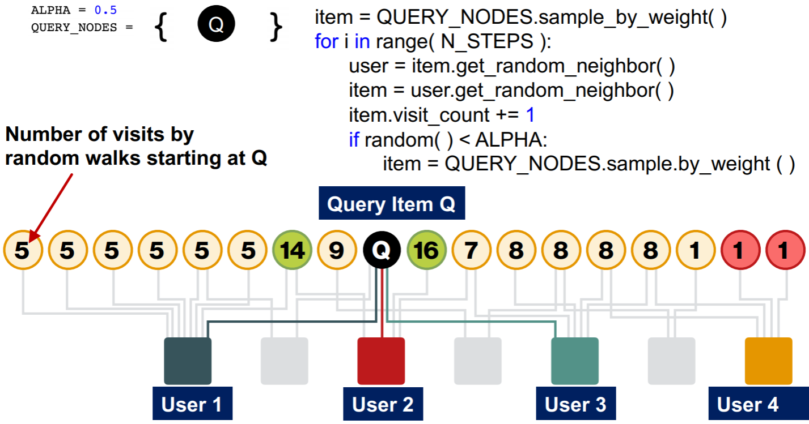
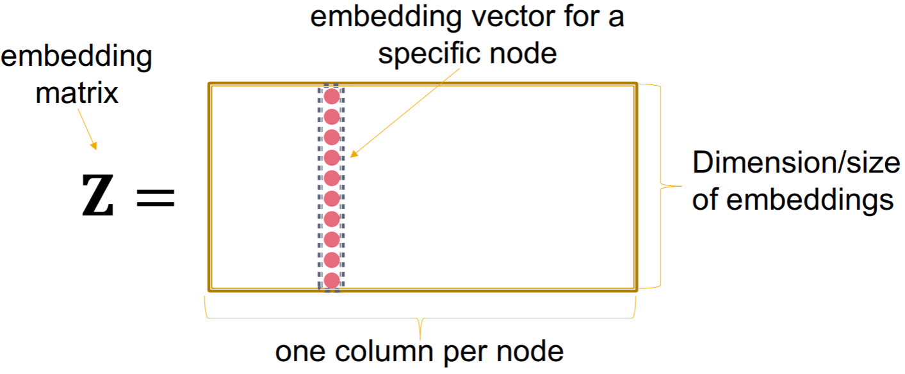
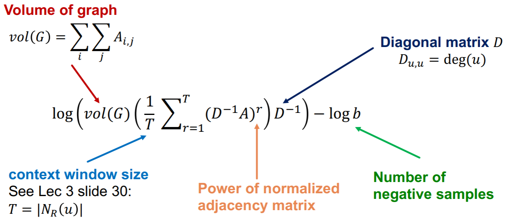
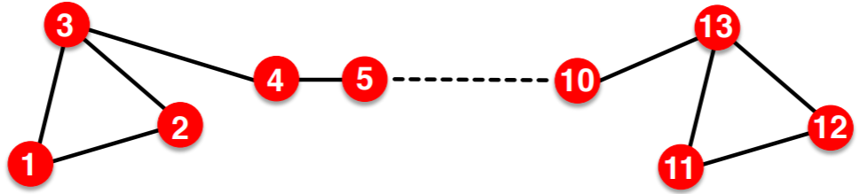

在这一节中，我们将从矩阵分解的角度来分析随机游走和node embedding，并介绍PageRank算法。
Overview
本文主要参考资料为CS224W的Lecture 4以及Graph Representation Learning的Chapter 3，课程视频可在Youtube观看。
PageRank
不同网页间的连接关系可以看做是一个有向图，在这一节中我们将介绍三种根据分析连接关系来计算节点重要性的方法：PageRank，Personalized PageRank和有重启的随机游走。
PageRank
定义$r_j$为节点$j$的rank，其计算式为
其中$d_i$是节点$i$的出度。定义随机邻接矩阵$\mathbf{M}$，若节点$j$到节点$i$有边连接，则$M_{i j}=\frac{1}{d_{j}}$，可以看出矩阵$\mathbf{M}$的每一列和都为一。因此我们有
可以看出这个形式与之前学过的Eigenvector centrality的形式是类似的，对于随机邻接矩阵，可以证明其最大特征值为1，而rank vector就是最大特征值对应的特征向量。Rank vector可以用power iteration来求解。
对于PageRank还存在两个问题，一个是dead ends，即存在没有out-link的网页；另一个是spider traps，即存在一个group其所有的out-link都在group内。对于dead ends问题，可以将节点跳转到其他节点的概率均匀分配；对于spider traps，可采用一下rank的定义
要求解的迭代问题变为
通常会取$\beta=0.8,0.9.$
Personalized PageRank和有重启的随机游走
在Pagerank中，我们是对所有网页进行了排序，现在假设我们想为某用户推荐一些网页、商品、或电影等，是否能针对特定用户给出不同的推荐，而非PageRank的全局排序呢？这里将介绍两种方法，Personalized PageRank和有重启的随机游走。
在PageRank算法中，可以看做每一步都可以teleport到一个节点集合$\mathcal{S}$，对于vanilla PageRank，这个集合是所有节点；对于Personalized PageRank，这个节点是所有节点的一个子集；对于有重启的随机游走，这个集合只包含一个节点。Personalized PageRank可以用于已知用户购买的某些商品，来对其他商品进行rank从而进行推荐；有重启的随机游走可以用于为购买了特定产品Q的用户推荐其他产品，相当于对其他产品与Q的proximity进行rank。

这两种PageRank的变体同样也是一个求limiting distribution的问题，即找到随机邻接矩阵的最大特征值对应的特征向量，可以用power iteration求解。
矩阵分解和Node Embedding
回顾一下上节课讲的embedding lookup

我们的目标是让相似的节点对$(u,v)$对应的embedding的内积$\mathbf{z}_{v}^{T}\mathbf{z}_{u}$尽可能大，如果将相邻的节点看做是相似的，那么我们的目标就是
当然，其他的loss function也是可以的，比如上节课用的softmax，还有decoder我们这里也给定了是内积，但是使$\mathbf{Z}^{T} \mathbf{Z}$逼近$\mathbf{A}$的目标是一样的。
除了adjacency similarity，接下来我们看一下更复杂的randomwalk similarity。以Deepwalk为例，相似性矩阵定义为

通过使$\mathbf{Z}^{T} \mathbf{Z}$逼近这个矩阵，就可以用矩阵分解的方法来implement Deepwalk。当然，node2vec等方法也可以用矩阵分解的方式来formulate，具体证明可在论文Network Embedding as Matrix Factorization: Unifying DeepWalk, LINE, PTE, and node2vec中找到。
Limitations
1.无法得到不在训练集内的节点的embedding，如新加入的节点；
2.无法捕捉如下的结构相似性；

3.无法使用node，edge，graph的特征。
为了解决这些limitation，下节课开始将介绍deep representation learning和graph neural networks。